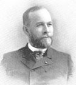
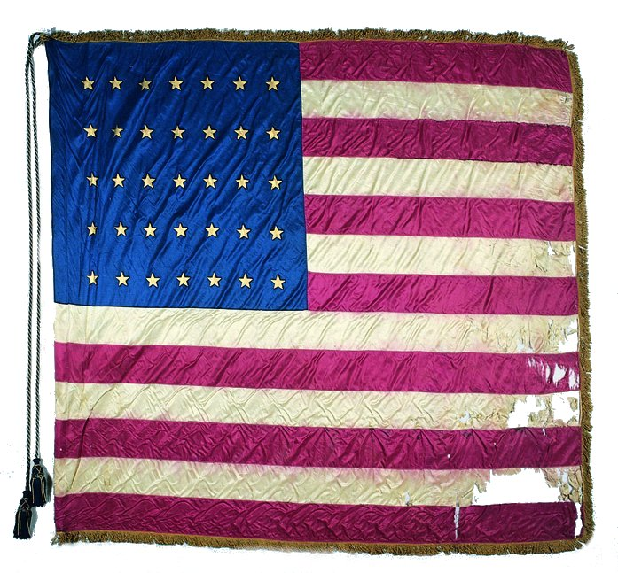
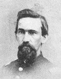
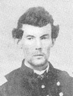
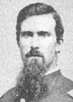
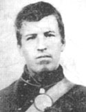
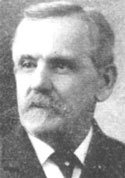
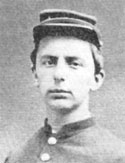
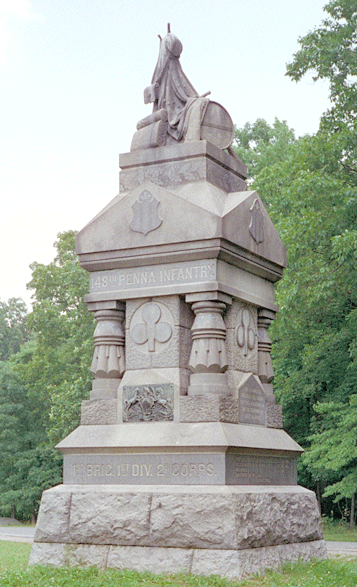
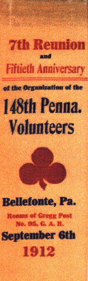

|
"Oh, men who fought at Gettysburg
Who wore the Union Blue
I'll keep my modest clover leaf
In memory of you,
And when upon it I shot gaze
What memories will throng;
Our cause it was forever
right
Our foes forever wrong.
Forever wrong: let history point
To
Gettysburg with pride;
For freedom triumphed on its
fields
And strangled, treason died.
Long may the
"clump of trees" remain
Where struggled Blue and
Gray,
And may the three leaf clover bloom
Forever
and a day."
The red three leaf clover was the treasured emblem of the
148th Pennsylvania Volunteer Regiment. This simple insignia
symbolized various actions and ideas which helped form a
highly distinct and distinguished fighting unit. The
discipline and rigidness set forth by the 148"s enthusiastic
and fair Colonel, James A. Beaver. The honor with which the
regiment garnered from men outside of the regiment, as well
as from members within. 'Me cause, the reason most of these
Pennsylvanians were in the war, to uphold their duty to the
Union, and to strike down a rebellion which threatened their
livelihood, and at one point their home state. The
camaraderie that built between the men through games,
pranks, and battles. The way in which this regiment showed
an excessive amount of bravery, even in the most critical of
situations as exhibited at Spotsylvania. All of these ideas
became stronger as time went on, growing more solid as the
men graduate became veterans of this terrible war. It is in
this red three leaf clover that the men of the 148'
Pennsylvania found so much pride, both during the war and
until the end of their lives. By examining the ideas and
actions that came to represent that simple insignia, it will
be shown how these Pennsylvanians came to cherish the 148th.
"The entire North was in a feverish
excitement. Many feared for the safety of the Union, while
all regarded the situation as extremely critical. The hour
had come to test the strength of a government "of the
people, for the people." - Lieut. Col. James F. Weaver
|

Col. (later Brig. Gen.) James Beaver
|
Centre County, located in central Pennsylvania, was a
rural setting. Families owned farms or small shops, and life
was peaceful. The majority of the residents of this area
had known no other home for their entire lives. It was a
communal society, one where neighbors knew one another, grew
old together. The people within Centre County were also
well educated. From a very young age men would help out on
the farm or help tend to their family's store, but when old
enough most participated in grammar school, and eventually
moved on to college. Bright and intelligent, most possessed
skills that would help during their journey into war, either
mundane traits they had learned as children, such as rope
tying, or more articulate ways of thinking which were
retained in college, that would help in devising and arguing
tactics, among other things.
By the middle of 1862 the Union Army was losing the war,
consistently being outmaneuvered by its southern foe.
President Abraham Lincoln recognized the need for additional
troops, and ordered over 300,000 volunteers to be summoned
for the task of bulking up the Union forces. The young men
of Centre County confronted this summons with an unbridled
enthusiasm. Patriotism was at a peak, and the call to help
their country blinded most men to the fact that death might
await them. A good example of this enthusiasm comes from
Daniel S. Keller who, because he was too young to enlist,
needed permission to go with the Army. Confronting his
father, he pleaded, "Father, let me go! My country needs
me, and I could never hold a book while the other boys were
holding guns."' His father consented for him to go, as did
most parents at this time, for an enemy force was
threatening the Union, and it was imperative that the North
win the war.
Yet while young and old men alike were feverish about the
possibility of fighting for their country, the men and women
who stayed behind in Centre County bore the deepest grief,
and were often privy to the grim reality of the situation.
They knew that there was a great possibility that their
husband, son, friend, or sibling might never come back. 'Me
sister of Daniel S Keller, Ms. Sophie Keller Hall, in
describing the grief which betook many left behind after
their loved ones went to war, remembers a poem that was sung
as the men of Centre County enlisted one by one.
"Brave boys are they,
Gone at their
country's call;
And yet, and yet,
We cannot
forget,
That many 'brave boys' must fall."
Although grief and anxiety among family members was high,
each person respected and supported the cause in which a
loved one went to fight for. As Ms. Hall once said, 'death
on the battlefield to the hero is a more glorious death than
any other."' And so the men from Centre County enlisted in
the Union cause, forming the 148th Pennsylvania Volunteer
Regiment, part of the Seconds Corps of the Army of the
Potomac.
"Not only did he show perfect bravery
and coolness in all emergencies, but (what is perhaps more
rare) he had an unusual power of organizing and directing
men, winning their affection and respect, and sustaining
their spirit and fortitude in hardships and dangers. And his
military skill and capacity were such that his superior
officer always felt perfectly safe in committing any
enterprise to this charge. I do not mention particular
instances of his well-doing, because he was one of those men
who always did his study." - Francis C. Barlow
James Addams Beaver was born in Millerstown, a
picturesque town in Centre County, Pennsylvania. He
heralded from a family with a rich fighting history, with
various members participating in the Indian wars and the
American Revolution. As a young boy Beaver was, as Frank A.
Burr describes him, "Lithe, straight, soldierly, with the
bearing of a man and the pale, beardless face of a boy."' He
was always gentlemanly and of high principle, yet no one
would more quickly stand up for something in which he
|

The flag of the 148th Pennsylvania Infantry
|
believed in.' Always studious and determined, he finished
grammar school and immediately went on to college. It was
after he had graduated from college and was beginning to
practice law that the Civil War began, and no man in the
north was as devoted to the cause of defending the Union as
Beaver. He listened to every muttering that came out
regarding the situation, weighing and evaluating the Union
position after each victory or defeat. He became eager to
get involved.
Beaver decided to join the Bellefonte Fencibles, a
fighting unit under soon-to-be Pennsylvania Governor Andrew
G. Curtin. The Fencibles did not see action until some
months after the war had been taking place, yet this did not
mean that Beaver wasted his spare time. He used this free
time to learn and study the arts of discipline, drilling,
and tactics, knowing that an understanding of these concepts
would prove to be essential to producing a fighting unit of
a substantial caliber. He soon had his chance to use his
newly attained knowledge, for in 1862 officers from a new
regiment, the 148th Pennsylvania, requested him to be their
Colonel. The following is part of a letter to James Beaver
from the high ranking officers of the 148th.
LIEUT. Col. James A. Beaver,
SIR: We, the undersigned, Captains from companies from
Centre County, being desirous of forming a regiment to be
called the Centre County Regiment... take this means of
offering the said command to you, believing that under your
care the Regiment will become efficient and realize the
hopes of our friends at home...
Beaver accepted this position, thrilled to be leading a
regiment from the area he hailed from in Pennsylvania. He
now had his opportunity to relay his tactics and ideas to
men under his jurisdiction, men who would rely on him for
guidance.
The regiment was first stationed at Cockeysville to guard
railroad lines, out of the way from major fighting. Without
delay Beaver began implementing his rules about discipline,
respectfulness and uniformity with the hopes that the 148th
Pennsylvania would become a model regiment for the Army of
the Potomac. As Sergeant Major Joseph W. Muffly noted, the
methodical course of drill and discipline would have "done
credit to a graduate of West Point after years of active
service." Every detail was attended to, rigidly and sternly.
Orders and salutes had to be crisp and loud. The men had to
march in step and in time, while not letting their attention
wander. The men had to look sharp, which meant every shirt
tucked in, every button sewed on properly, every uniform
cleaned of mud and debris, every rifle and sword
consistently shiny and well taken care of. According to
Muffly, a slouched hat was an "abomination" to the regiment.
There were no exceptions to any of these rules. The men had
to salute and acknowledge officers, and the officers had to
do the same. In a rather comical incident which illustrates
the discipline which Beaver was attempting to enforce, two
officers went into Beaver's tent, without acknowledging the
salute of the sentry who stood guard, Beaver thundered out,
"Gentlemen, do you see that sentinel? You can't come in here
that way. Go back, go right back across that beat, and
acknowledge the salute. If I were a soldier and saluted an
officer and he did not recognize it, I would never salute
him again." They promptly corrected the error, and most
likely did not forget to salute a soldier again. Colonel
Beaver had his rules and disciplines and would not allow
anyone, even his highest officers, to break them. Another
interesting encounter happened between Mr. Jacob Condo, a
guest of the regiment, and Colonel Beaver regarding the
tough standards for which Beaver was implementing.
|



Some of the officers of the 148th Pennsylvania, including
Captain (later Colonel) James Weaver, Lieutenant James
McCartney, and Lieutenant William Harper.
|
"Colonel, the boys tell me that you am a little too
severe on them.' The colonel asked him in what way. 'Well,
you are too particular.' The Colonel remarked 'Mr. Condo, if
you would break a colt, would you break him with a loose or
tight rein?' Condo replied 'With a tight rein.' The Colonel
said, "That is the idea exactly, after the colt is trained
with a tight rein and the min is afterward slacked up, he
enjoys it all the more.' Mr. Condo saw the point and said,
'That is right Colonel, that is right."
Yet there may have been a deeper meaning to the stem way
in which Colonel Beaver enforced his disciplinary ideas. It
is obvious that by doing so the regiment would look clean
and fit, something which generals such as Winfield S.
Hancock thoroughly respected and appreciated. Yet by
introducing rigid rules and tight procedures Colonel Beaver
attempted to create the best possible fighting unit, one
which would be ready in any circumstance. By doing this, he
would save countless lives that would have been lost due to
being unprepared. He also helped to increase the moral of
his troops. Although the initial trials of each day may
have seemed harsh, after time the men of the 148th came to
appreciate the way in which they were prepared to handle any
situation, even before the regiment was engaged in any
fighting.
The regimental motto, although short, speaks volumes
about the attitude which the men began to take under Colonel
Beaver. 'Ready, always ready." A good example of this
preparedness is exemplified at Chancellorsville, the first
major battle for the 148th Pennsylvania. After the battle,
General John C. Caldwell commented:
Of the conduct of the officers and men
during the entire movement, I can not speak in terms of too
high praise. I confess I was somewhat anxious for the 148th
Pennsylvania Volunteers, it being a new regiment, and never
having been exposed to fire. It behaved, however,
throughout, with the greatest coolness, vying with the old
troops in steadiness ... Colonel Beaver of the 148th
Pennsylvania deserves the highest praise for the discipline
and efficiency which he has secured in his Regiment.
Discipline became the most important attribute of Colonel
Beaver. It helped to produce one of the most efficient and
effective regiments in the Army of the Potomac, preparing
the 148th for the harsh trials which were to come, It gave
to the men a sense of belonging and a high state of
self-confidence. Colonel Beaver was the backbone of the
148th, characterizing its actions and its men.
"On the 22nd of April [1864], the
reinforced corps was for the first time brought together, on
the occasion of a review by General Grant ... More than
twenty-five thousand men actuary marched in review. The
appearance and bearing of the troops was brilliant in the
extreme; but among all the gallant regiments which passed
the reviewing officer, two excited especial attention; one
was the 40th New York, Colonel Egan, from the famous Third
Corps, the other was the 148th Pennsylvania, Colonel Beaver,
from the old Second Corps."
Before the 148th Pennsylvania ever saw combat, the ideas
and rules which Colonel Beaver instilled began to show signs
of working, both in the men of the regiment and from people
outside of the regiment. The men began to feel a growing
sense of honor in being a part of the 148th, both in the
preparedness in which they were ready for combat, and in
their showmanship. This helped to raise moral, something
which is so important when going into battle. Confidence is
not automatically handed out, it must be earned by working
to achieve it. After months of training under Colonel
Beaver the men's confidence in themselves and in the
regiment was as high as any unit which had not taken to the
fields of battle.
One way in which this confidence was exemplified was in
parades and regimental formations. As Henry Meyer pointedly
states, "it afforded an opportunity for strutting gait."
Colonel Beaver made sure that while marching in parades the
men looked their best. White gloves were mandatory, as were
paper collars, something most regiments did not use. Shoes
were expected to be polished, as were brass buttons. The
garment was to be buttoned from top to bottom." With this
intensive attention to detail, the 148th began to garner a
reputation for looking sharp during parades and while on the
march. In a letter to his mother, written before the
regiment had been involved in any fighting, Colonel Beaver
speaks of a compliment paid to his men.
"The regiments which were taken prisoner at Harper's
Ferry were sent to Chicago and, having been exchanged, are
now on their way to Washington. They have been some time in
the service and would be likely to know a neat soldier, if
they saw one. They stopped here on their way down and,
seeing our pickets go by and the guard in front of my door
with their clean, white gloves, burnished brasses and
blackened shoes, several of the officers called up some of
our men who were standing about and asked them whether we
were not regulars ... I never saw an inspection as credible
as that of today."
This quote helps to show that Beaver began to feel honor
in his men, and that these men began to exude confidence in
themselves and the regiment. Through their poise and by
looking clean and sharp at all events and reviews, the 148th
received widespread attention throughout the Army of the
Potomac.
If a single event had to define the honor in which each
member had in the 148th Pennsylvania, it would be the
acceptance of repeating rifles near the end of the war. Due
to its effectiveness and consistency, the repeating rifle
was highly treasured by whomever was able to use it. Towards
the end of the war President Lincoln ordered that more
repeating rifles be manufactured, yet this number did not
come close to satisfying the needs of the army. Because of
this, only one regiment in each division of the Army of the
Potomac was selected to use this deadly weapon. General
Hancock, in charge of the 2nd Corps, designated the 148th
Pennsylvania to represent his First Division in the use of
this rifle. This honor brought great satisfaction to the
regiment, and is highly regarded in letters and diaries.
|



Some of the enlisted men of the 148th Pennsylvania, including
Private G.G. Walters, Private J.F. McNoldy and Sgt. Major
Joseph Hall.
|
"Comrade Elias Edelman who had found a
rebel shell near camp, was encouraged by some
mischief-loving boys to experiment with it, and they
assisted him to load it with powder, lay a train and light
it. Then they fled to a place of safety. For some reason
the explosion did not come off at once, and the experimenter
went back to ascertain the cause, and stooping down to
investigate he blew into the fuse end of the shell. And now,
the explosion came with a suddenness and poor Elias' face
was of the color of lamp black..." - Private Henry Meyer
Though discipline, honor, and confidence are important
elements in achieving an efficient fighting unit, it is the
camaraderie among the men which helps to create a sense of
belonging, the feeling of being needed, and unity. The men
of the 148th Pennsylvania had come from the same area, many
having grown up together as neighbors in the same towns. As
Captain James J. Patterson fondly remembers, when enlistment
began in his hometown of Boalsburg, young men would say,
'Yes, I am going," and even though many knew of the perils
which awaited them, the consistent response was, "I am with
you," So from the very beginning these Pennsylvanians were
supporting each other, following their fellow citizens
towards an undefined ending. Perhaps it was this undivided
support which made this such a tight knit group of men.
Life in the camp was filled with activities. Stories
were often told to each other, relating experiences from the
past, or bringing to light interesting happenings of the
present. Although checkers was played on occasion, the men
took the most pleasure in playing cards. Card games often
became exciting events, with players garnering supporters to
cheer them in their cause. They did not play for money as
other regiments often did, competing only for the thrill of
the game. Baseball was also growing in popularity at this
time. In reference to this new pastime, Walt Whitman once
said, "It will take our people out-of-doors, fill them with
oxygen, give them a larger physical stoicism. Tend to
relieve us from being a nervous, dyspeptic set." Often
called "bat ball" or "stick ball' by the soldiers, it did
exactly what Whitman predicted it would, relieve nervousness
and apprehension and make them feel better. It was an ideal
activity in that it created an atmosphere of athletic
competition, something which often excites young men.
Pranks were another way to pass the extra time in camp,
and bring the men closer to each other. One such antic
involved Benjamin Beck, known as one of the most obstinate
men in the regiment. Mr. Beck was in the habit of heating
an unused bayonet while sitting around the campfire, and
then thrusting the glowing metal into the hole of a log,
causing smoke to fill the air to the annoyance of his
comrades. The following relates what happened one evening
when Mr. Beck came back to camp.
"And when Mr. Beck noticed Ms bayonet in the fire, the
point heated to a cherry red, he seized the tempting steel,
pushed it with all Ms force into the hole, intending that
time to penetrate the log. But there was a terrible
explosion. Mr. Beck lay sprawling upon his back on the
floor... The boys had inserted the powder of several
cartridges into the hole."
Colonel Beaver had a special relationship with his men.
One example of this happened while Beaver was resting in
camp. Out of nowhere one of his men began swearing, seeding
to reinvent words as he went. In a half hearted manner
Beaver notified him that under the Articles of War he could
be fined for using such language in front of an officer. To
the Colonel's utter astonishment the disgruntled man took a
dollar bill out of his pocket and handed it to him. Not
wanting to take his money, Beaver told the man to keep the
dollar because he didn't have any change to give back to
him. The man promptly replied, "Never mind the change,
Colonel, I expect I'll swear it out." Somehow Beaver ended
up leaving without taking the money, but this episode helps
to show that although Colonel Beaver enforced strict
guidelines, he always remained sociable and fair with the
men. These men were under his care, relied upon him for
their very survival, and he felt it was his obligation to
know each and every one of them to the best that he could.
The men of the regiment became his friends, his comrades,
and in a letter to his mother he even referred to them as
his family. This feeling of "family" was prevalent among
all of the men.
A testament to this feeling of camaraderie and family
involved Private Samuel Halloway. Halloway had the
distinction of being the first death in the regiment, killed
by Union cannon debris at Chancellorsville. His death left
a lasting mark on his fellow companions. Private Henry
Campbell noted that "One year to the day on our way to the
Wilderness we put a marker to his grave." This action alone
shows how close these Pennsylvanians were to each other, how
their friendship and devotion lasted even after death. This
fidelity was a source of honor for the regiment, and helped
them fight for their cause.
"Whilst lying inactive in this position,
I think every Pennsylvania was inspired by the thought that
he was on home soil, and that, with rare exceptions, each
one nerved himself for the great struggle which he realized
to be so near at hand, and in which he knew he would be
called upon to bear a dangerous and it might be a fatal
part." - Major Robert H. Forster In an address for the
dedication of the 148th Pennsylvania Monument at Gettysburg,
September 11, 12, 1889
When the men of Centre County first enlisted in the war
in 1862, their motive was duty. Duty to protect the North
from their southern foe, duty to uphold and preserve the
Union, duty to fight for the freedom of those that had none.
These reasons held meaning to the men of the 148th that in
our day and age we take for granted. The idea of duty and
preserving the Union came to a threshold at Gettysburg. The
march from Maryland to this small town in southern
Pennsylvania was gruesome. In one day the regiment traveled
a distance of over thirty-two miles, far surpassing the
average daily distance of ten to fifteen miles. The weather
was hot, and fairly humid, causing the wool uniforms to act
like an oven. Depending on their individual endurance, some
men kept up with the pace while others were forced to
straggle somewhat behind. Yet as A. T. Hamilton pointed
out, "'Me rescue of Pennsylvania required us to move
ourselves and all that belonged to us." The realization
emerged that they would likely face their southern foe on
their home soil. Invasion of the South was no longer a
prerogative, defense of their loved ones and the soil which
they cherished was. Yet the South was not just attacking
Pennsylvania, they were attacking the founding fathers of
the Union, who had signed the Constitution and created a new
nation on the very soil which they were about to fight on.
By stepping onto Pennsylvanian soil the South blatantly
threatened the very livelihood of Northern individuals and
society. The men of the 148th, along with all the other
Pennsylvania regiments present, felt it was their obligation
to protect and preserve the Union.
On the morning of July second, the 148th Pennsylvania,
along with the rest of the 2nd Corps, was moved into
position behind the 3rd Corps of General Sickles. Some of
the men confronted the situation with apprehension and
excitement, some were cool and relaxed. All were exhausted
from the previous day's march. Every one of them knew that
they could not lose this battle, not on their home soil.
Private Henry Meyer recalls how the men felt before the
148th became involved in the fight at Gettysburg.
"The Confederate soldiers had been living, for two weeks
previous, on the 'fat of the land.' Their march north was
made by easy stages, and they were excellent fighting trim.
On our side, there would have been some excuse for
discouragement; our recent reverses and the frequent change
in commanders, would tend to lesson confidence. Our boys
had made toilsome marches, under a broiling sun, just on the
eve of battle ... But it was imperative that our Army should
be victorious; defeat would have meant tremendous loss to
the cause of the Union."
Sickles, without orders, moved his troops forward into
the 'peach orchard,' and although they put up a good fight,
they were soon in need of assistance from the 2nd Corps.
The 148th and the rest of the First Division in Hancock's
Corps moved forward into what is now known as the
"wheatfield." As enemy fire began to pierce the air, the
formations within the 2nd Corps began to falter. The
confusion was quickly righted by the 148th, a testament to
their disciplined training. Soon the First Division was
engaged with the Confederates, each side launching wave
after wave of heavy fire. The 148th pushed forward until
they reached the rapacious fighting on the far side of the
wheatfield, an area of good ground which the men knew could
not be given to the Rebels. They decided to hold their
ground until reinforcements could arrive. Many of the men
realized that a division under General Hood was in front of
them, a force far larger than the 148th, yet they held firm
in their decision to hold their ground until reinforcements
arrived. Dropping to the soil so that they could see the
|

One of the monuments to the 148th Pennsylvania
at Gettysburg
|
enemy below the smoke, the regiment sent a barrage of fire
into the rebel horde. As Private Henry Meyer noted, "I
matched the rebels as they moved from tree to tree, and shot
at several with steady aim. "Casualties began to mount and
ammunition began to run alarmingly low, yet they held their
ground until the 5th Corps was able to relieve them. A
monument now stands where the 148th made their stand against
overwhelming odds, a tribute to the determined nature of
this group of Pennsylvanians and to the cause which they
knew could not be lost.
Bravery 'The combat now became close and bloody. The
enemy in vastly superior numbers flushed with the
anticipation of an easy victory, appeared to be determined
to crush the small force opposed to them, and pressing
forward with loud yells, forced their way close up to our
line, delivering a terrible musketry fire as they advanced.
Our brave troops again resisted their onset with undaunted
resolution. General Winfield S. Hancock
What does it mean to be brave? Perhaps it stands for the
pursuit and defense of an idea which you believe in, no
matter how fearsome or intimidating the odds might be
against you. If this is the case, then men from every
regiment, North and South, could be considered brave, and
rightly so. Yet the 148th Pennsylvania was put into one of
the most unfortunate positions of the war, and their bravery
eclipses that of most other regiments. It had to, otherwise
their fight to uphold their duty to the Union would have
been thwarted.
The situation occurred at Spotsylvania, where one of the
bloodiest battles of the Civil War took place. On May 9th,
1864, Union forces attempted a frontal assault on their
Southern foe, who was heavily entrenched on higher ground.
The 2nd Corps proceeded to cross the Po river to take the
Southern position, with the 148th Pennsylvania leading the
way. Wading through the narrow yet deep stream, the men
were met by a barrage of bullets from the entrenched units
ahead of them. The regiment pushed on and managed to gain
several Southern batteries and flags, despite the fact that
the Po River began to turn blood red from the mounting
casualties. As the day wore on, however, the battle
intensified, and the 2nd Corps was ordered to fall back,
with the 148th in the unfortunate position of protecting the
retreat from behind. The regiment occupied dozens of
positions within the next hour, fighting off their larger
rebel foe who was in pursuit of the Corps. Yet the majority
of the 2nd Corps separated from the 148th, and failed to
send orders or information as to where to go, or what to do
next. Colonel Beaver, having no idea where the rest of the
Corps was, decided that the men must hold their ground until
orders could be ascertained. The Rebs saw that the 148th
was cut off, and ordered a full attack. The following
excerpt is told by Sergeant Major J. W. Muffly.
"This battle began at about three in the afternoon, and
lasted about two hours. We lost twenty killed, one hundred
and twenty-five wounded and twelve missing. So far as we
could see, we were the only regiment left on that side. In
all the long bloody hours of that useless battle, no orders
reached us. It seemed that a single regiment was left to
fight two divisions of Hill's Corps. The fight went on
until we had fired our last cartridge. Our men were falling
like game before hunters, and still no relief and no orders.
Beaver could stand it no longer. Calling me to his side, he
said...'I will take the responsibility of withdrawing my
Regiment without orders.' So we made good our retreat ...
Beaver looked back at the procession of stretcher bearers
with their burdens, and said with tears in his eyes, 'Oh, my
brave boys! What a pity."
Although the individual bravery of the men of the 148th
was needed in facing a foe many times their size, it is
perhaps the story of an individual soldier which exemplifies
the true meaning of bravery. It involved a Private William
H. Kellerman, of Company H. Kellerman was cut off from the
rest of his company, and, determined not to be captured,
concealed himself amongst the bushes and vines. He sat
there for eight days, living off of the roots and barks
which were scattered around him. Temperatures reached
almost freezing proportions on a nightly basis, yet he did
not give up, knowing that if he was captured his fight for
his country was at an end. Finally, on the eighth day,
after noticing that the Rebs were late in posting sentries,
Kellerman escaped and succeeded in reaching the Union line.
He was examined, revived, and lived to fight another day.
The casualties which the 148th suffered at Spotsylvania
were horrifying. Thirty-three killed, two hundred and
thirty-five wounded, and thirty-three missing, the greatest
loss of any infantry regiment at this dreadful battle. Yet
the men of the 148th Pennsylvania, in letters and stories,
|

Ribbon worn by attendees at a reunion of the
148th Pennsylvania
|
describe their role at Spotsylvania with great enthusiasm
and incredible pride. Thee answer for this lies in the
bravery which the 148th showed at this battle. While facing
extreme odds, harrowing circumstances, and with death
rapidly claiming life after life, these men fought on,
oblivious to the power of the opposing force and determined
to see their cause to a victorious end. This is the true
mark of bravery.
"So I seem to have blundered into one of
the finest regiments under the flag, commanded by a Colonel
who had no superior and few equals, and thus came to share
in its splendid record and it's notable achievements. I am
sure that I voice the sentiment of every man who served in
the Regiment, when I say that our greatest pride and highest
honor in life is in the fact that we served in the 148th
Pennsylvania Volunteers." - Sergeant Major Joseph W. Muffly
The men of the 148th felt incredible pride towards their
unit, both during and after the war. There may be several
reasons to why this is so. One may be the sense of honor
which was prevalent throughout the regiment. In stories
written over forty years later, men almost always mentioned
at some point the exuberance they felt knowing that they
were a part of something which garnered recognition. For
example, on the 14th of November in 1862 the regiment was
asked to put on a show on behalf of the governor of
Pennsylvania. Colonel Beaver relates how the regiment felt
during this event.
"The regiment was proud of itself that day, as I
certainly was of it, and the officers and men alike enjoyed
the favorable comments which were made by our visitors and
the people of the neighborhood upon its soldierly appearance
and the precision and ease of all its movements in the
battalion drill and review."
The men of the 148th reveled in the attention which they
received, boosting their moral as well as creating a sense
of pride in what they were accomplishing.
Another reason men had a high sense of pride in the 148th
may be the fact that although over 1339 people fought for
the Centre County Regiment, only 570 remained unscathed at
the end of the War, a casualty rate of over 66% and a true
testament to the almost apathetic attitude towards their
personal well being while in combat. The cause was greater
than any one person. The Union had to be protected against
a rebellion which threatened to undermine the very laws
which had been written less than a century previously. In
reading the multitude of accounts regarding the various men
in battle, and by looking at the actions of the regiment at
Gettysburg and Spotsylvania, it is clear that these
Pennsylvanians felt it was their obligation and duty to
fight for their country, no matter how grim the situation
may have been. The fact that they always gave an excellent
fight and never willingly retreated provided a deep sense of
pride among members of the regiment.
Finally, Colonel Beaver was a large reason why these men
fought so hard, felt so good about themselves, and had such
a high sense of pride in the 14th Pennsylvania. This
studious individual was the backbone of the regiment, the
figure that all looked to for guidance. He was cherished by
every one of his men, considered their leader, and their
friend. He made it clear from the beginning what was
required to become a model fighting regiment, and through
discipline and enforcement he succeeded in forming that
regiment. A unit which was the source of pride for his men,
and for himself. Thus, the red clover leaf, ordinary in
appearance to the average person, will always symbolize the
unity and desire for which the men of the 148th Pennsylvania
Volunteer Regiment cherished. I end now with a quote from
Colonel James Addams Beaver, written almost forty years
after the end of the war.
"It has always been a source of great gratification to me
that officers and men alike in our Regiment, with fewer
exceptions than would naturally be expected, in every time
of danger, emergency and trial rose to the demands of the
occasion and, so far as my personal knowledge and record go,
brought no discredit upon the unsullied record of the
Regiment. We had an esprit de corps that was unusual, a
well defined ideal toward which w aimed and a devotion to
duty which met all demands and surmounted all obstacles. The
comradeship, born of the scenes and trials through which we
passed as a Regiment, has continued to this day and has
been, as it continues to be, one of the greatest pleasures
and most constant sources of enjoyment of my life."
Source: History 191 Student Danny Zelman
|